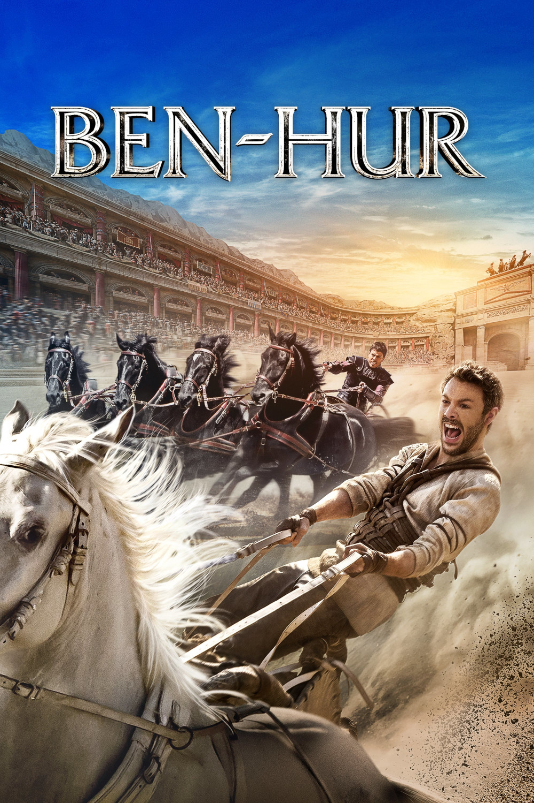

Мировая премьера: 19 августа 2016
Слоган: Брат против брата. Раб против империи.
Сюжет: Действие происходит в Палестине времён римского владычества – зарождения христианства. Знатный гражданин Иудеи Бен-Гур, преданный названым братом Мессалой, попадает в рабство на римские галеры на пять лет. Он преодолевает нечеловеческие страдания на пути к освобождению и воссоединению со своей любимой и, оказавшись внезапно на свободе, при помощи шейха Ильдерима возвращается на родину. Бен-Гур полон решимости отомстить, но вместо этого он получает шанс обрести мир в душе: среди евреев ходят слухи о странствующем сыне Божьем.
Режиссёр: Тимур Бекмамбетов
В основе: Роман Лью Уоллеса "Бен-Гур" (США, 1880)
В ролях:
| Джек Хьюстон | Джуда Бен-Гур |
| Тоби Кеббелл | Мессала Северус |
| Морган Фриман | Шейх Ильдерим |
| Назанин Бониади | Эсфирь |
| Родриго Санторо | Иисус |
| Айелет Зурер | Наоми Бен-Гур |
| Пилу Асбек | Префект Понтий Пилат |
| Дэвид Уолмсли | Марк Децим |
| София Блэк-Д'Элиа | Тирза Бен-Гур |
| Марван Кензари | Друз |
| Дато Бахтадзе | Начальник гребцов |
| Мойзес Ариас | Дисмас |
| Джеймс Космо | Квинт Арий |
Бюджет: $ 100 млн.
Кассовые сборы в США: $ 26 млн.
Кассовые сборы в мире: $ 94 млн.
Продолжительность: 1 ч. 56 мин.
Рейтинг: 5.7